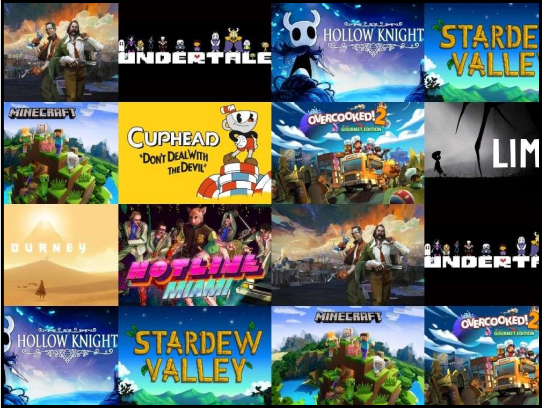

O QUE SÃO JOGOS INDIES?
Jogos indies, como também são chamados os jogos independentes, cresceram muito nos últimos anos. Se antigamente eles eram conhecidos como produtos de “segunda” e jogos de baixo orçamento, hoje são referência na indústria de games e também na forma como a relação comercial funciona – o que gerou até mesmo a produção de um filme/documentário sobre este mercado, o Indie Game: The Movie.
Jogos indies, como também são chamados os jogos independentes, cresceram muito nos últimos anos. Se antigamente eles eram conhecidos como produtos de “segunda” e jogos de baixo orçamento, hoje são referência na indústria de games e também na forma como a relação comercial funciona – o que gerou até mesmo a produção de um filme/documentário sobre este mercado, o Indie Game: The Movie.
Segundo o site TechTudo
